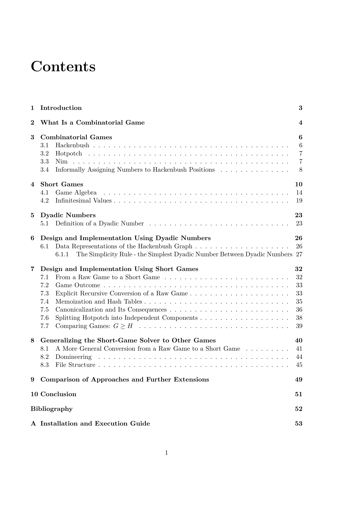

This is a web-based demo of my final bachelor's thesis. The main subject of the thesis was a C library that evaluates short games and is compiled to WebAssembly for this demo. The term "short game" is not widely known and more people know these values as "surreal numbers", although that is technically incorrect in this context.
The project includes, among other things, Python and JavaScript wrappers for the C library. I found the Python wrapper more interesting to work on, so it is more fully developed. The relevant files, game.py and game_runtime.py, can be found on GitHub.

You can read the thesis in English or Czech.
Please note that I am not a web developer, so the quality of this site may not be top-notch. The primary goal was simply to showcase my thesis. Also note that the English version of my thesis was translated automatically, so it may contain some errors.